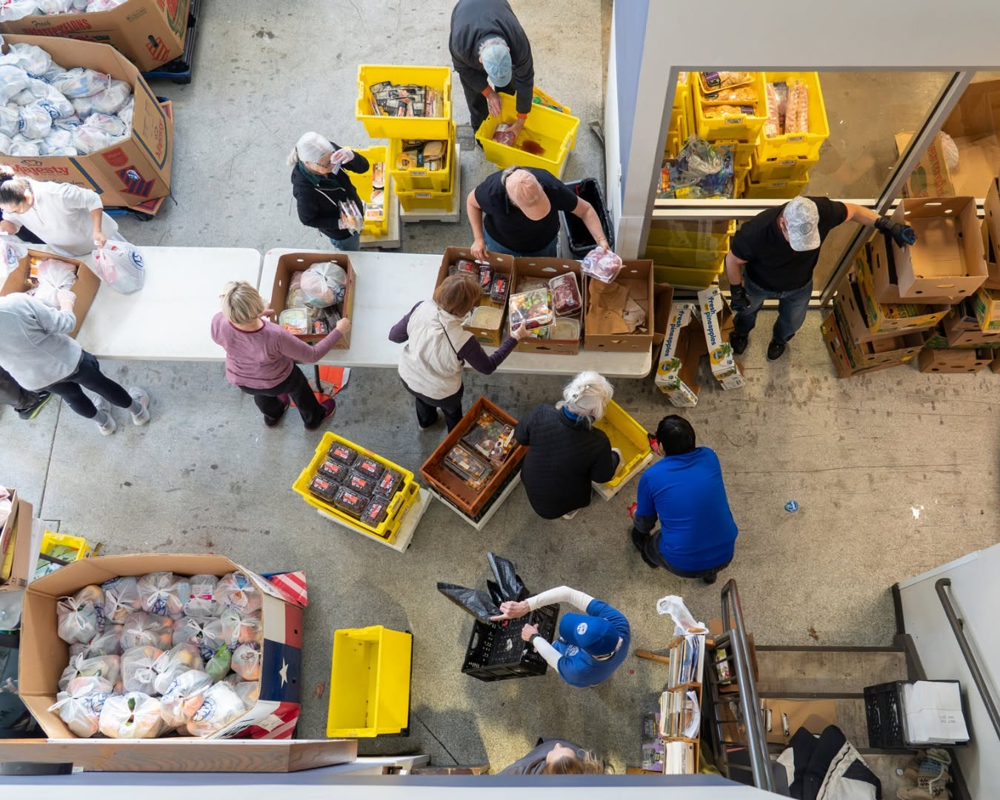
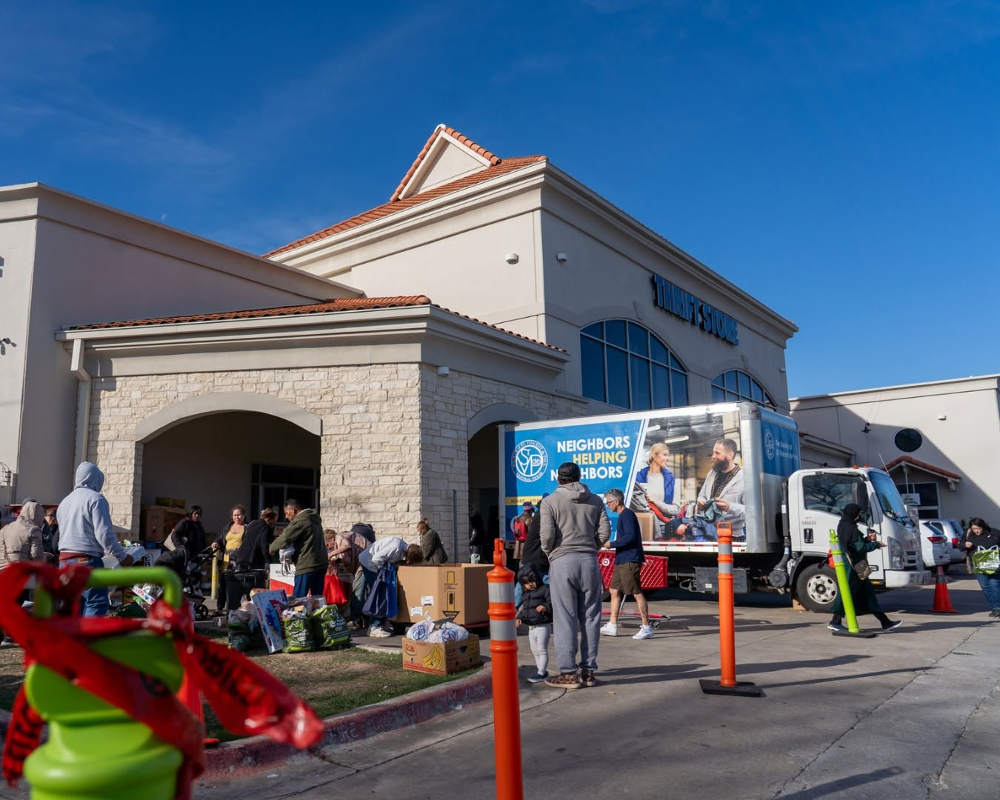
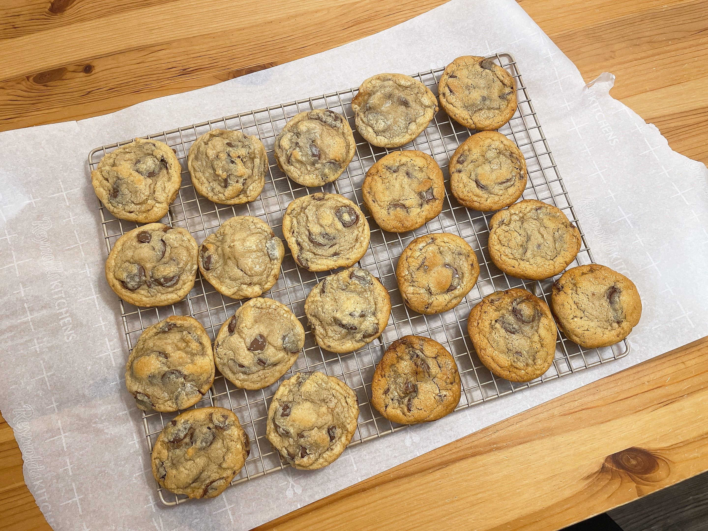
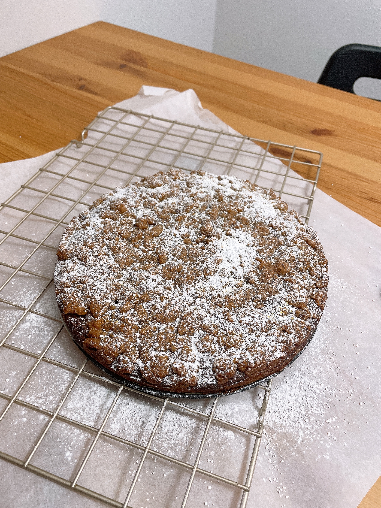

Serving our Neighbors


I have been honored to help serve our neighbors at the Society of St. Vincent de Paul food pantry in Austin (almost) every week since the summer of 2022. It is the highlight of my week and gives me a chance to step outside academia and connect with the broader community. I have learned so much from working alongside such dedicated and warm-hearted volunteers. It has also taught me that food distributors are pretty bad at estimating the weekly demand for certain products, especially strawberries and salads!
The Baker in Progress



Baking is my favorite way to unwind and share something tangible with the people around me. I wouldn't call myself an expert yet, but I'm a dedicated student of the craft, always tinkering with a recipe until it's just right. My current pursuit is the elusive Levain-style chocolate chip cookie — thick, craggy, and gooey in the middle. If you have thoughts on how to get there, I'd love a taste-tester (and a second opinion)!